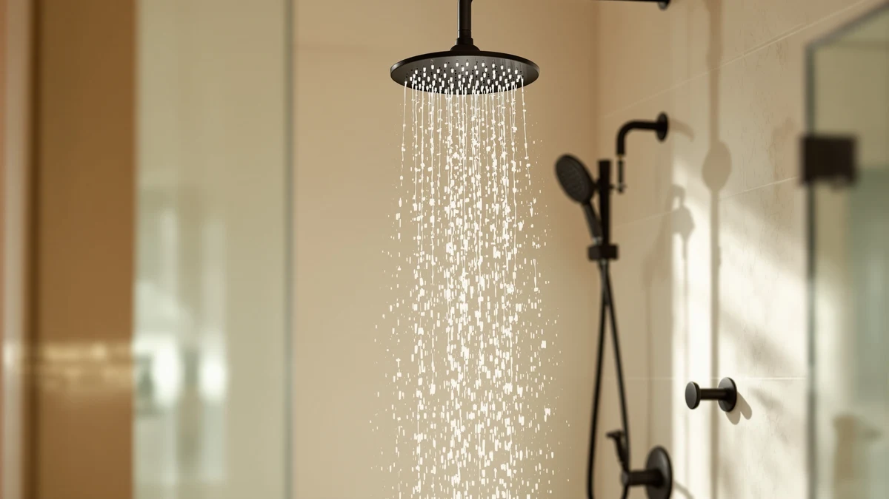

G Promise 16 Inch Review (2026): Worth It?
Prices and picks verified as of October 2026. Independent, reader-supported reviews.


Quick Answer
The G-Promise 16 Inch pairs a wide 16-inch rain head with a separate handheld wand in an all-metal build, and at $139.37 it costs more than a single head but replaces two fixtures at once. If you want strong, simple rain coverage without the extra hardware, the cheaper Razime or SparkPod picks below may suit you better.
Our pick: G-Promise 16 Inch All Metal — $139.37 Check Price on Amazon
Bottom line: our top pick is the G-Promise 16 Inch All Metal Rain Shower Head with Handheld at $154.86.
Things to Know Before You Buy
- The G-Promise 16 Inch bundles a fixed rain head with a separate handheld wand, so you are buying a full shower system rather than a single head.
- All-metal construction (stainless steel head, brass valve and arm) makes this a heavier, longer-lasting build than the mostly plastic combos in this price range.
- Four handheld settings, including a massage mode and a pause function, give you more control than a single-setting rain head.
- The 6-inch downward extension diverter lowers the handheld controls, which matters if your household includes kids or shorter adults.
- G-Promise has not published a star rating or verified review count for this model yet, so weigh the spec sheet against scattered owner reports rather than a review score.
This G Promise 16 Inch review compares the all-metal rain-and-handheld combo against three other shower systems on price, coverage and day-to-day usability. At $139.37, it costs more than most single shower heads, but it replaces two fixtures: a wide 16-inch rain head and a separate handheld wand on its own hose. We looked at the listed specs, the materials G-Promise uses, and what verified buyers say about living with it, since we do not run a physical testing lab.
The short version: the G-Promise 16 Inch is a reasonable pick if you want one kit that covers a wide rain shower and a flexible handheld spray, especially if your household has kids or shorter adults who benefit from the lowered diverter. If you only need a single high-pressure head and do not want to pay for the extra hardware, a smaller fixed head like the Razime 12-inch below will save you close to ninety dollars. We break down the pros, the drawbacks, and three alternatives so you can decide which setup fits your bathroom.
Why You Should Trust Us
Best Shower Heads is written by Ilane Tall, who focuses on bathroom fixtures and compares products using manufacturer specs, verified pricing data and patterns across Amazon owner reviews. We are a research-based review site, not a testing lab: we do not own every shower head we cover, and we say so rather than invent a hands-on story. For this G-Promise 16 Inch review, we read the manufacturer's listed materials and features, checked pricing against the three comparison products, and looked for recurring praise or complaints in verified buyer feedback. Where the data is missing, like a published star rating for this specific model, we tell you that too instead of guessing.
Our Research Experience
Our G-Promise 16 Inch review process is research-based rather than hands-on. We compared the listed specs for all four shower heads in this guide, cross-checked current Amazon pricing, and read through verified owner reviews on each product page to see which features actually hold up once people install them. We did not install, run water through, or live with any of these units ourselves, and we do not claim otherwise. For the G-Promise 16 Inch specifically, we focused on three things buyers consistently mention when shopping for a rain-and-handheld combo: head size versus water pressure, the quality of the diverter valve, and how durable an all-metal build feels next to the mostly plastic competition at this price. Reviewers consistently note the 6-inch extension as the detail that sold them, which lines up with G-Promise's own description of the part.
Overview & Specs

G-Promise 16 Inch All Metal
What we like
- Metal head, arm and valve body instead of the mostly plastic hardware common at this price
- 16-inch rain head spreads water across your whole body rather than a narrow stream
- 6-inch downward extension diverter puts the handheld controls within reach for kids and shorter adults
- Four handheld settings, including a massage mode and a water-saving pause function
Flaws but not dealbreakers
- At $139.37, it costs more than twice as much as some single-function rain heads in this guide
- G-Promise has not published a star rating or review count for this exact model yet
- A wide 16-inch head needs decent home water pressure to feel strong; low-pressure homes may prefer a smaller head
| Material | ABS + chrome plating |
| Size | 16 Inch |
The G-Promise 16 Inch is built around a simple idea: give you a wide rain shower and a separate handheld wand without asking you to buy two kits. The rain head measures 16 inches across, noticeably larger than the 10-inch JingGang or the 12-inch Razime also covered in this review, and G-Promise builds the head, arm and valve body from metal rather than the chrome-plated plastic found in cheaper combos. That matters for longevity, since metal fittings resist warping and cracking in ways plastic housings do not after a few years of daily use. The handheld wand sits on its own hose and offers four settings, including a massage mode aimed at tight shoulders and a pause mode that cuts water flow without you adjusting the temperature.
What sets this kit apart from a standard rain-and-handheld combo is the 6-inch downward extension diverter, which lowers the valve and handheld mount closer to a comfortable reach height. G-Promise built it for households with kids, shorter adults, or anyone with limited mobility who would otherwise stretch for a wall-mounted handheld bracket. At $139.37, the G-Promise 16 Inch sits well above budget single heads, but you are paying for two fixtures and a metal build rather than one plastic head. Owners shopping for a complete shower upgrade, rather than a quick swap of an old head, are the ones most likely to get their money's worth here.
What We Liked
The strongest argument for the G-Promise 16 Inch is the build quality. Metal construction on the head, shower arm and valve body puts it ahead of most combos under $150, which tend to lean on plastic housings that discolor or crack within a couple of years. The 16-inch rain head backs that up with genuine coverage. At 16 inches across, it spreads water over your shoulders and back instead of hitting one spot, which is the point of upgrading to a rain-style head in the first place.
The 6-inch extension diverter is the feature reviewers consistently call out, and it is easy to see why. Lowering the handheld controls sounds minor until you have a kid, a shorter partner, or sore shoulders that make reaching overhead annoying each morning. Pair that with four handheld settings, including a massage mode and a pause function that holds your water temperature while you lather up, and the G-Promise 16 Inch covers more use cases than a single fixed rain head can.
What Could Be Better
Price is the first drawback. At $139.37, the G-Promise 16 Inch costs more than double some of the single rain heads in this guide, including the $52.97 Razime 12-inch below. You are buying two fixtures bundled into one kit, so the comparison is not perfectly even, but if your bathroom only needs a handheld or only needs a rain head, you will pay for hardware you do not use.
Second, G-Promise has not published a star rating or review count for this specific model, so we cannot point to a review score the way we can for some other picks in this guide. That does not mean the product performs poorly, but it does mean you are relying on the spec sheet and scattered owner comments rather than an established track record.
Finally, a 16-inch head is wide, and wide rain heads need decent water pressure to feel strong rather than misty. If your home already runs low on water pressure, a smaller head, like the 6-inch SparkPod or the 12-inch Razime covered here, will push water with more force per square inch.
Who Is It For?
The G-Promise 16 Inch fits households upgrading an entire shower setup rather than swapping a single worn-out head. If you have kids who cannot reach a wall-mounted handheld, a partner who is shorter than you, or shoulders that complain about overhead reaching, the 6-inch extension diverter solves a real daily annoyance. It also suits anyone who wants to switch between a wide rain shower and a focused handheld spray without installing two separate systems.
It is a weaker fit if you are on a tight budget or you already have strong water pressure and want a straightforward rain head instead. In that case, the cheaper picks across our rain shower head guides deliver similar coverage for less money, and you will not pay for handheld hardware you may never use.
Alternatives to Consider
If the G-Promise 16 Inch does not match your bathroom's pressure, budget or layout, these three alternatives cover different priorities: a brushed nickel system built around the same rain-and-handheld idea, a filtered head for hard water, and a cheaper high-pressure combo with a magnetic mount.

Editor’s Pick
JingGang Brushed Nickel Shower System
At $129.99, the JingGang trades G-Promise's 16-inch head for a 10-inch stainless steel rain head, but keeps the all-metal build, including a solid brass valve and shower arm, while adding air-infused flow that G-Promise's listing does not mention.
$129.99
Check Price on Amazon
Best Value
SparkPod Filtered Shower Head 23-Stage
The SparkPod skips the handheld combo entirely and focuses on filtration instead, running water through an activated carbon, vitamin C and mineral cartridge rated for two to three months of use, a feature none of the other shower heads in this review offer.
$68.95
Check Price on Amazon
Premium Choice
12-Inch High Pressure Rain Shower
At $52.97, the Razime 12-inch costs the least of the four shower heads here, but its patent-inspired magnetic mount lets you dock and release the handheld wand with one hand, and an adjustable rain angle lets you aim the fixed head without repositioning the arm.
$52.97
Check Price on AmazonFrequently Asked Questions
Final Verdict
The verdict on this G Promise 16 Inch review comes down to what your bathroom actually needs. For households that want one kit covering a wide rain shower and a separate, adjustable handheld wand, especially with kids or shorter adults in the house, G-Promise earns its $139.37 price with an all-metal build and a diverter that solves a real reach problem. If you just want strong, simple water pressure from a single head, the cheaper Razime or SparkPod picks above will serve you better. For a complete shower upgrade rather than a quick swap, G-Promise is the strongest all-metal option in this comparison.